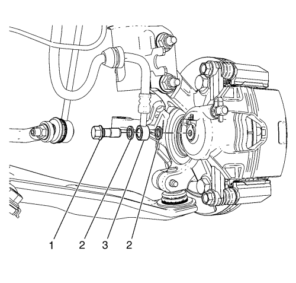
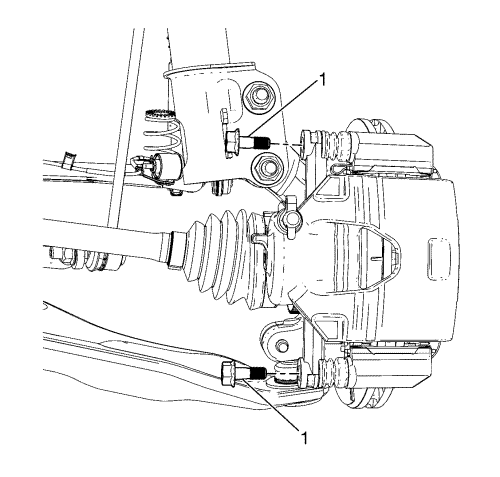

Sustitución de la pinza del freno delantero
Advertencia: Consulte Advertencia relacionada con el polvo procedente de los frenos en la sección Prólogo
Advertencia: Consulte Advertencia de líquido de frenos irritante en la sección Prólogo
Procedimiento de desmontaje
- Compruebe el nivel de líquido del depósito del cilindro maestro.
- Si el líquido de frenos está a mitad de camino entre el punto de llenado máximo y el nivel permitido mínimo no habrá que quitar nada de líquido de frenos del depósito.
- Si el nivel del líquido de frenos está por encima del punto intermedio entre el nivel máximo y el nivel mínimo permitido, saque líquido de frenos hasta que el nivel del mismo llegue a un punto intermedio, antes de proseguir con el trabajo.
- Elevar el vehículo y soportarlo de manera segura. Consultar Elevación del vehículo con un gato .
- Desmonte la rueda del vehículo. Consultar Desmontaje y montaje de la rueda y el neumático .

- Extraiga el perno del latiguillo de freno (1) de las pinzas de freno.
- Extraiga el latiguillo de freno (3) de las pinzas de freno.
- Desmonte y deseche las 2 arandelas de cobre del latiguillo de freno (2). Estas arandelas pueden estar acopladas a las pinzas de freno y/o al extremo del latiguillo de freno (3).
- Tape o tapone la abertura en las pinzas de freno y el latiguillo de freno para evitar la pérdida de líquido y la suciedad.

- Extraiga los pernos guía de las pinzas de frenos (1).
- Desmonte la pinza de freno, de sus soportes.
- Compruebe si los pasadores guía de la pinza de freno tienen libertad de movimiento y compruebe el estado de las fundas de los pasadores guía. Mueva los pasadores guía hacia dentro y hacia fuera dentro de los orificios del soporte sin desenganchar las correderas de las fundas y observe lo siguiente:
| • | Movimiento limitado del pasador guía de la pinza |
| • | El soporte de fijación de la pinza de freno está suelto |
| • | Pasadores guía de la pinza gripados y agarrotados |
| • | Fundas rotas o desgarradas |
- Si se encuentra una de las situaciones que se indican, habrá que sustituir las espigas guía de la pinza del freno o las fundas.
Procedimiento de montaje
- Monte la pinza de freno en el soporte de la pinza de freno.
Precaución: Consulte Precaución con las fijaciones en la sección Prólogo
- Coloque los pernos del pasador guía de la pinza de freno (1) y apriételos a 28 N·m (21 lib. pie).
- Desmonte las caperuzas o tapones de la apertura de la pinza de freno y el latiguillo de freno (3).
Nota: No vuelva a utilizar las arandelas de cobre del latiguillo de freno viejas.
- Monte arandelas de latiguillo de freno, de cobre, NUEVAS (2), en el tornillo de fijación del latiguillo de freno a la pinza de freno (1) y en el latiguillo de freno (3).
- Monte el latiguillo de freno (3) y el tornillo de fijación del latiguillo de freno a la pinza de freno (1) en la pinza de freno, y apriételo a 40 N·m (30 lb pie).
- Purgue el sistema de sistema de frenos hidráulicos. Consultar
Purga de aire del sistema de frenos hidráulicos : Presión → Manual .
- Monte el conjunto de neumático y llanta. Consultar Desmontaje y montaje de la rueda y el neumático .
- Bajar el vehículo.
- Con el motor apagado, pise poco a poco el pedal del freno hasta aproximadamente 2/3 de su recorrido.
- Suelte lentamente el pedal.
- Espere 15 segundos, y entonces pise de nuevo gradualmente el pedal hasta aproximadamente 2/3 de su recorrido hasta que el pedal de freno quede aplicado firmemente. Esto asentará correctamente los pistones de la pinza de freno y las pastillas de freno.
| © Copyright Chevrolet Europe. Reservados todos los derechos |